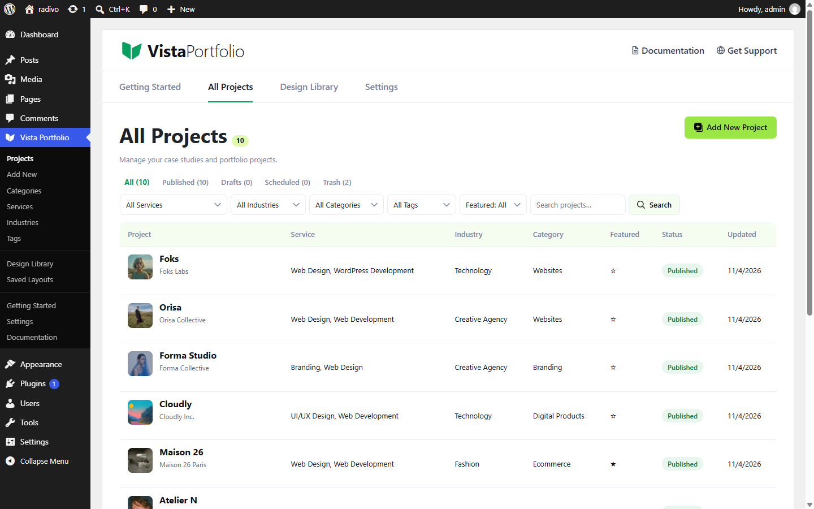
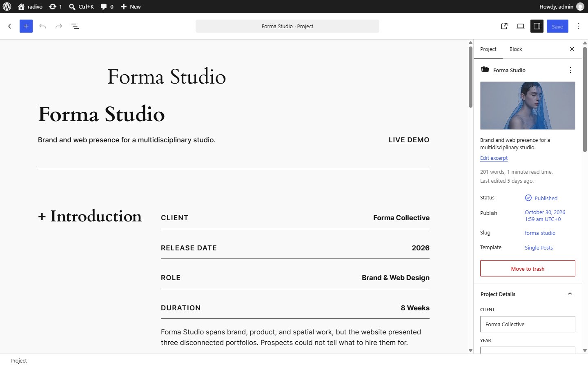

Projects
Vista registers the vista_project custom post type for case studies and portfolio work.


Meta fields
| Field | Purpose |
|---|---|
| Client | Client or brand name |
| Year | Project year |
| Role | Your role on the project |
| Duration | Timeline or engagement length |
| Project URL | Live site or case-study link |
| Featured | Highlight in collections that filter featured items |
Projects support title, editor content, excerpt, featured image, and revisions.